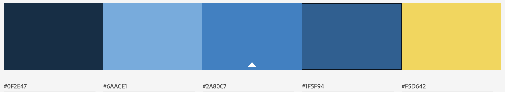

Colors
Color Inspiration
The colors were inspired by the hope of a clear blue sky and the blink of shining sun.
Color Use
- F5D642: Co Name, Nav
- 1F5F94: Header, Footer Text
- 2A80C7: Nav Active
- 6AACE1: Main
- 0F2E47: Nav Text, Main Text, Main H2
- White: Logo, H2 Motto, Footer
- Mediumblue: a:link